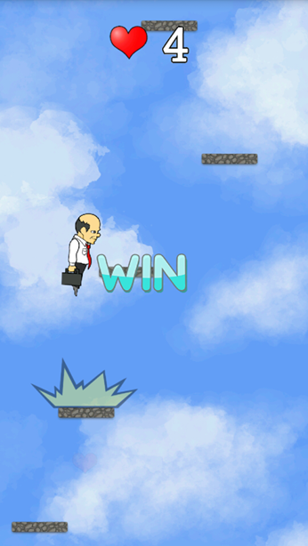
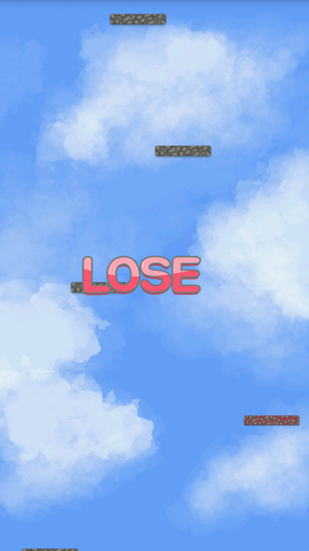
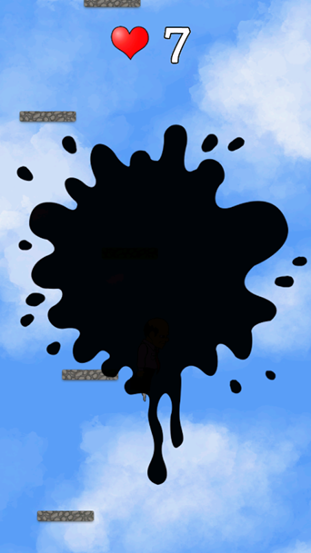

2015-07-21 고등학교 2학년
아버지의 사랑
MOBILE APP GAME
Android Native / Java / C Socket
제작인원 : 5명 / 프로그래머 담당
 2015 교내 선린해커톤 경진대회 동상 수상
2015 교내 선린해커톤 경진대회 동상 수상



교내 선린 해커톤 출품작 아버지의 사랑
아버지의 사랑은 자이로스코프를 기반으로 기울기를 이용해 발판을
점프해 위로 올라가는 게임이다. 하지만 기존의 점프게임과는 다르게
C Socket을 이용해 다른 플레이어와 같이 게임을 즐길 수 있게 구현하였다.
적과 같이 시작하여 발판을 밟으며 올라가고 특별한 발판을 밟으면 적에게 먹물이나
발판을 투명하게 바꾸는 등에 공격을 할 수있으며 먼저 떨어진 쪽이 지게 된다.
자이로스코프를 사용하여 기울기에 따른 이동 알고리즘을 개발하였다.
통신을 위해 C Socket 을 사용하여 플레이어들 끼리 경쟁할 수 있도록 구현했다.